Shinji Sean OGO
いばしょクリエイター（Creator of a place where we belong）
名刺・初対面向けの簡潔版は lit.link/shinjiseanogo ／ このページは保存用アーカイブ（冗長版）
自己紹介
ハッピーノートを仲間と創っています。いばしょクリエイター、感謝日記活動、現代ハガキ道提唱者、俳句詠み、パラレルキャリアクリエイター。
Creator of "place to be" based on "parallel careers" — Happy Note Maker, Haiku maker.
日記の記録を1日1色のタイルに並べ、人生全体を1枚の画像にする ハッピーノート モザイクを、2026年から商品として進めています。

lit.link のビジュアル 保存
名刺用の lit.link で使っている画像を、このアーカイブにも残しています。
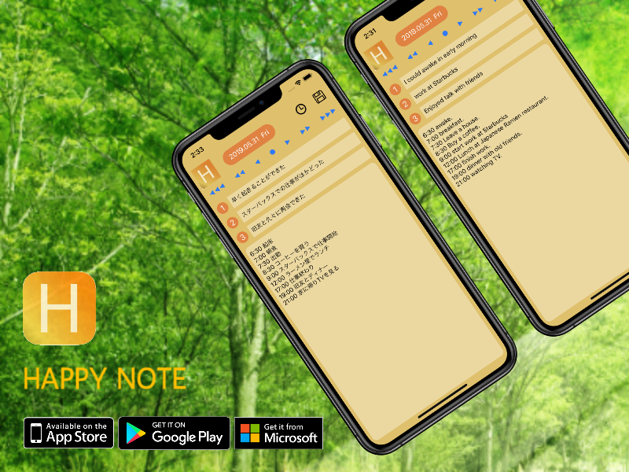
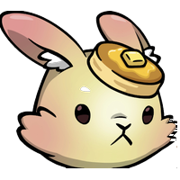
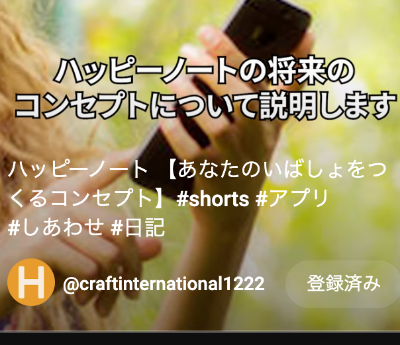
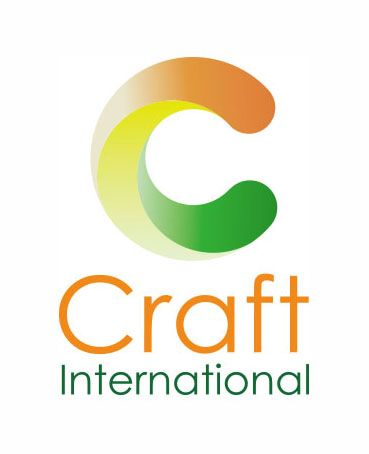
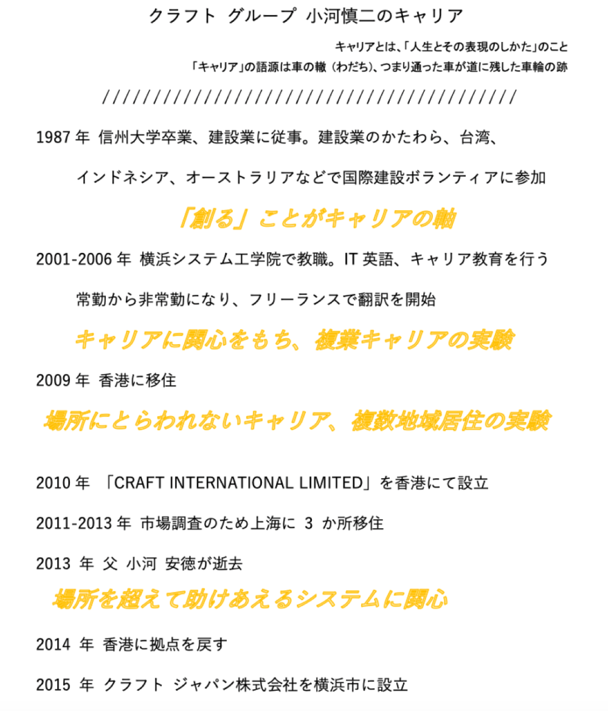
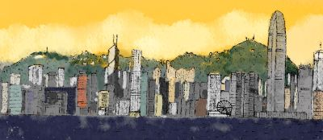
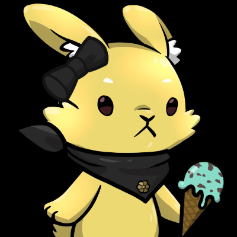
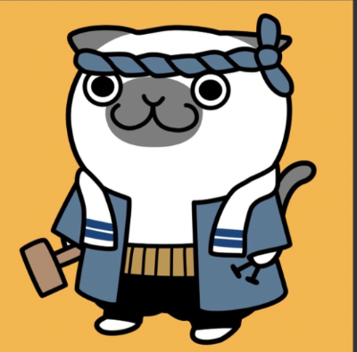
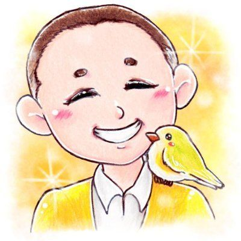
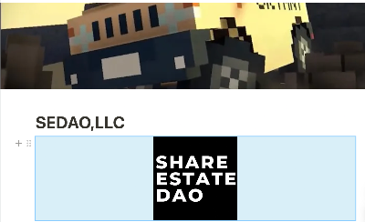
いまの活動（2025〜2026）
ハッピーノート（HN）の記録から、次の軸で活動しています。
- ハッピーノート モザイク — 個人版・コミュニティ版（歴史モザイク）の LP、紹介パートナー、チラシ・SNS
- ハッピーノート アプリ — 無料の感謝日記アプリ、HN倶楽部
- Web3 / JPYC — モザイク EC ショップ、Web3EC など（詳細は各リンク）
lit.link では上記の入口だけを短く載せ、このアーカイブに詳細を残しています。
プロジェクト・リンク一覧
lit.link と同じ画像をカード左に付けています（タップで各サイトへ）。
-
lit.link（名刺用・簡潔版）
初対面・名刺交換時の入口
lit.link/shinjiseanogo -
ハッピーノート モザイク（個人版 LP）
あなたの日々を1日1色のタイルに
mosaic-lp.vercel.app/index.html -
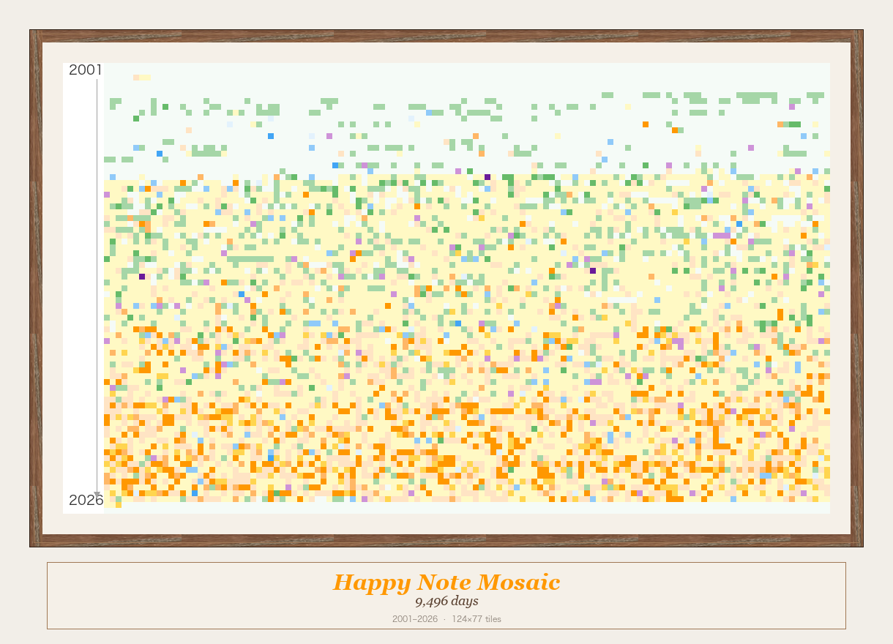
モザイク コミュニティ版学校・団体向け
mosaic-lp.vercel.app/corporate.html -
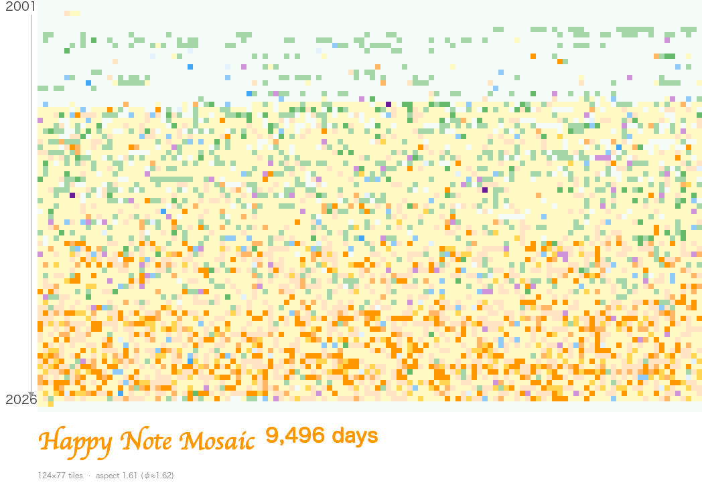
歴史モザイク デモコミュニティ版の実例
mosaic-lp.vercel.app/history.html -
ハッピーノート（無料アプリ）
ダウンロード・紹介
craftinter.biz/happynote/ -
弊社サイト
CRAFT INTERNATIONAL
craftinter.biz -
X（Twitter）
Shinji OGO / @shinjiogo
x.com/shinjiogo -
LinkedIn
英語版の職歴
linkedin.com/in/shinji-ogo-8b930631 -
いまの想いのブログ
CRAFT サイト内
craftinter.biz（ブログ・記事） -
HN クラウドファンディング / メンバーシップ
クラウドファンディング・HN メンバーシップ
craftinter.biz/happynote/ -
したいこと（動画）
1分30秒版・7分30秒版
lit.link の該当ブロックへ -
HN チャンネル（YouTube）
ハッピーノート関連動画
lit.link の該当ブロックへ
事業紹介
つぎの3つの事業をしています。
- アプリケーション開発事業（ハッピーノート プロジェクトなど）
- コミュニケーション事業（翻訳、通訳、ドキュメント制作など）
- コンサルティング事業（人材教育、キャリアデベロップメントなど）
法人
- CRAFT INTERNATIONAL LIMITED（香港）
- Craft Japan Co., Ltd.（横浜）
クラフトグループ 小河慎二のキャリア
キャリアとは、「人生とその価値のしかた」のこと。「キャリア」は航海士の魂（わだち）、つまり歩いた跡が道に等した航跡の跡。
-
1987年 — 信州大学卒業。建設業に従事。台湾・インドネシア・オーストラリアなどで国際奉仕に参加。
テーマ：「創る」ことがキャリアの核 -
2001〜2006年 — 横浜システム工学専門学校に教員として勤務。IT・キャリア教育。
テーマ：キャリアへの関心、パラレルキャリアの実践 - 2002年 — 熱海に移住。テーマ：場所に縛られないキャリア
- 2010年 — 香港に CRAFT INTERNATIONAL LIMITED を設立
- 2011〜2013年 — 上海市場調査のため3か月滞在
- 2013年 — 父（小河俊樹）逝去。テーマ：場所を越えて人が助け合う仕組みへの関心
- 2014年 — 拠点を菅沼へ
- 2015年 — 横浜に Craft Japan Co., Ltd. を設立
- 2023年 — lit.link（リットリンク）shinjiseanogo を作成。自己紹介ハブとして周知。
- 2025〜2026年 — ハッピーノート モザイクの商品化、LP 公開、紹介パートナー制度
詳細な職歴・英文プロフィールは LinkedIn を参照してください。
NFT・Web3・アーカイブ 保存
lit.link 簡潔版からは外していますが、過去の取り組みとしてここに残します。
NFT プロジェクト
- HN Collection
- NFTCNP / CNPG
- NFT LLAC
- My Collection — 保有 NFT
代表参加プロジェクト（自己紹介より）：HN、CNPG、CNP、LLAC
SEDAO（Share Estate DAO）
業務執行社員として関与した時期あり（2024〜2025年頃）。2026年は lit.link 表からは非表示。
その他（過去の lit.link ブロック）
- HN のログ機能による法人向けデジタルマーケティング
- HN 印刷版
- HN による語学学習
趣味・その他
Discord ID: seanogo
ニックネーム
Sean — 私の英語の名前。「ショーン」と呼びます。John のアイルランド風の読み方です。「シーン」でもけっこうです。日本名の「しんじ」と掛けています。
趣味や好きなこと
- 感謝日記活動
- 香港
- 散歩、読書
- 本多静六さんの生き方を尊敬して、現在試行中
- 俳句、現代ハガキ道
連絡先
- メール: shinjiogo@craftinter.biz
- lit.link: https://lit.link/shinjiseanogo
- LinkedIn: Shinji OGO